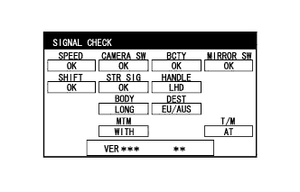

СИСТЕМА МОНИТОРА ЗАДНЕГО ВИДА (для моделей с системой монитора бокового обзора) > СИСТЕМА ДИАГНОСТИКИ |
| СИСТЕМА ДИАГНОСТИКИ МОНИТОРА ЗАДНЕГО ВИДА |
В целях диагностики системы монитора заднего вида можно проверить сигналы, получаемые ЭБУ системы помощи при парковке, а также откалибровать, отрегулировать и проверить эту систему с помощью вспомогательного индикатора.
| СМЕНА ЭКРАНОВ ДИАГНОСТИКИ |
для моделей без монитора типа местности
для моделей с монитором типа местности
| ЗАПУСК РЕЖИМА ДИАГНОСТИКИ |
Запустите двигатель.
Включите вспомогательный индикатор.
Отведите наружные зеркала заднего вида.
Выполните манипуляции с переключателем освещения в течение 10 секунд:
выкл. → вкл. → выкл. → вкл. → выкл. → вкл. → выкл.
| ЗАВЕРШЕНИЕ РЕЖИМА ДИАГНОСТИКИ |
Метод 1
Выключите зажигание.
Метод 2
Нажмите переключатель MODE (режим) вспомогательного индикатора
| ПРОВЕРКА СИГНАЛОВ (ВХОДНОЙ СИГНАЛ ЭБУ СИСТЕМЫ ПОМОЩИ ПРИ ПАРКОВКЕ) |
Войдите в режим диагностики.
|  |
ПРОВЕРКА СИГНАЛОВ
На экране "SIGNAL CHECK" можно проверить состояние сигналов, передаваемых ЭБУ системы помощи при парковке, а также настройки.
| Описание | Информация о проверке | Примечание |
| SPEED | Входной сигнал скорости | Если отображается "CHK" (красного цвета), при выборе "NEXT" система не перейдет к следующему экрану. |
| CAMERA SW | Вход сигнала переключателя на рулевом колесе в сборе (выключателя широкоугольного монитора переднего вида и бокового обзора) | |
| BCTY | Состояние обмена данными по шине CAN с главным ЭБУ кузова (бортовым ЭБУ сети мультиплексной связи) | |
| MIRROR SW | Вход сигнала отвода наружного зеркала заднего вида | |
| SHIFT | Вход сигнала положения рычага переключения передач | |
| STR SIG | Вход сигнала датчика угла поворота рулевого колеса | |
| HANDLE | Вход сигнала положения рулевого колеса | |
| BODY | Сигнал размера кузова | |
| DEST | Вход сигнала данных о рынке сбыта | |
| MTM | Сигнал определения монитора типа местности | |
| T/M | Сигнал определения трансмиссии |
Закончите режим диагностики.
| КАЛИБРОВКА ПРИ ОБСЛУЖИВАНИИ АВТОМОБИЛЯ |